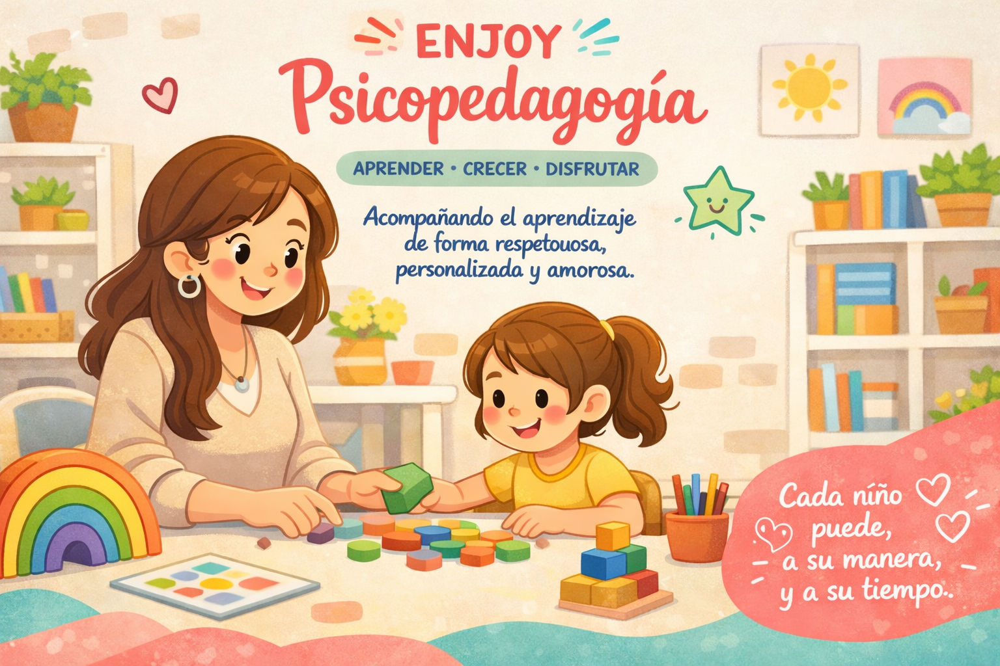

Bienvenidos a EN-JOY Psicopedagogía
Hola, soy Joana Reche, JOY para la familia. La palabra "Joy" en inglés significa "alegría", y esa es precisamente la esencia de mi trabajo. Soy Licenciada y Profesora en Psicopedagogía. Y Actualmente, tengo la oportunidad de trabajar en instituciones escolares. Acompaño el aprendizaje de niños de forma personalizada, respetuosa y amorosa, potenciando sus habilidades y fortaleciendo su desarrollo.